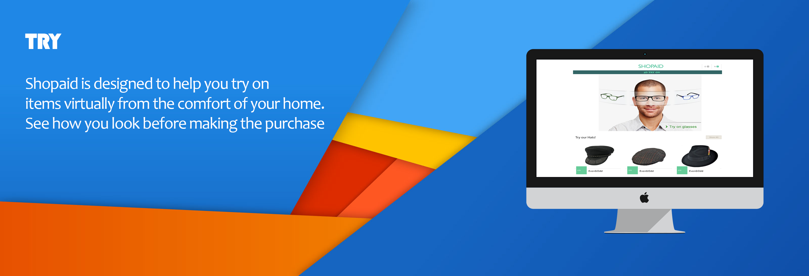
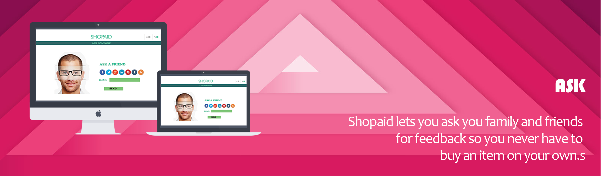
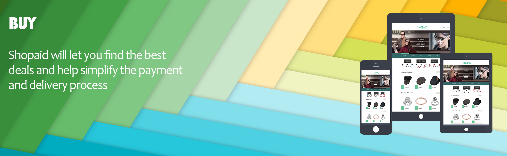
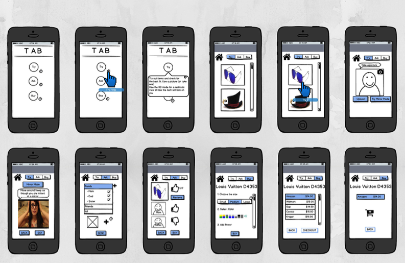
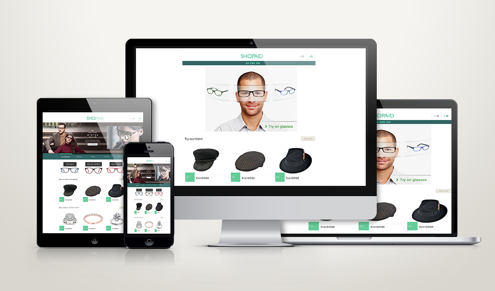

SHOPAID
Shopaid is a application that helps shoppers make smart decisions. It provides a way for shoppers to try items virtually from the comfort of their homes and get input from family and friends before making the final purchase. We built this application to mitigate buyer's remorse.
Problem
Often times we buy a particular piece of item and as soon as we reach home we regret it. This problem was soo common to us and the general population so we conceived and designed an application that helps you "TRY" an item virtually before making the purchase. A good buy is not just choosing the right product but also making sure you look good with it. We use "ASK" which helps you ask your friends/family before you go on to "BUY"! Take a look at ShopAid.
Solution
ShopAid is a website and corresponding mobile app that helps people improve their shopping experience. In order to make sure customers are happy with their choices we also provide a feedback mechanism where users can ask the opinion of friends and family before making a final purchase. We identified key pain points that exist in the real world and implemented conceptual solutions that mitigate the frustration of shopping and help create a pleasurable experience.
Takeaways
This project was unique in many ways but there are some key takeaways that has helped me better implement other projects. One main flaw is that we tried to incorporate all phases of the shopping experience such as Trying the item, asking someone for their opinion and choosing the best option to buy the item. This meant that there was no MVP and therefore the uniqueness and in turn its "selling point" was divided between these features. In my next application HomeWorks I tried to identify the most important "thing" our application intends to do and built auxillary features around this main feature.
The complete report is available here
  Full Process
Shopping is an inherent part of today's life. The process of shopping at a physical superstore such as a mall, which contains a varied range of products, is in my opinion similar to shopping on the Internet. In order to answer critical questions that this application must address I conducting user observations and catalogued Field Notes along with interviews. Observation revealed some critical insights such as the difficulties users faced when provided with numerous choices. One key insight I observed is that shoppers who shop alone take longer time and traditionally found it harder and more frustrating to make smart shopping decisions.
Ideation
To better conceptualize our user population I created Persona Stories that helped reveal the characteristics and attributes of the user. I chose a college student for my persona due to their familiarity with mobile applications, their frequent shopping habits and their comfort with interacting with similar apps on the market. I constructed a perosna story that would help me a mental models of frequent shoppers who are our primary target user.
Using my persona and our interviews and observations we set about creating an Empathy Map. We chose to do an Empathy Map as this helps reveal the experience of the shoppers while highlighting their needs and desires at any given step.The Empathy map was the most beneficial as it helped us gain insight into the user's thinking process. We also used affinity diagramming to better interpret our observations and group similar components.
Prototype
I created paper sketches of the intended product and did a simple wizard of Oz method to test the viability of the idea. Using this I identified the main features that this application must provide and designed auxillary components that supports these features. Our inital prototype was named TAB( Try - Ask - Buy).
What are the Core Components?
TRY
Shopaid is designed to help you try on items virtually from the comfort of your home. See how you look before making the purchase.
Shopaid lets you ask your family and friends for feedback so you never have to buy an item on your own.
Shopaid will let you find the best deals and help simplify the payment and delivery process.
I built the information architecture and corresponding flow diagrams of the interactions that this application must support on paper. Using these desings I built a balsamiq model of the product and proceeded to show it as many people as i could from students to industry professionals. I believe it is important to show low fidelity designs to get the best feedback. From experience I have learnt that if you show someone a high fidelity design they tend to nitpick on the visual aspect and this is not beneficial at a stage when we are trying to evaluate the interaction desing of the application.
Usability Tests
Using the designed prototype, we conducted usability tests on the product. For this project I conducted cognitive walkthroughs but the most helpful method of testing was heuristic evaluations. We used Nielsen's heuristic guidelines to evaluate the product. I was able to identify 21 heuristic violations some of which are shown here. Please take a look at the full report for a list of all violations. This helped me refine the product and create a more intuitive experience for the user.
Be Humble and Iterate
We went through 4 iterations before we found the best model. In the first model we noticed that the product was not intuitive so, in subsequent models we tried to implement the best way one can experience all the features of the product . We ensured that all parts of the application namely Try, Ask and Buy were independant and the user was able to easily navigate through the application. In our final versions we incorporated prinicples of the HOOK model to increase product use and appeal. Please take a look at the full report for detailed information of the product and its design philosophy.
The complete report is available here


{kind=link}
{kind=link}
{kind=link}
{kind=link}
{kind=link}
{kind=link}
{kind=link}
{kind=link}
{kind=link}
{kind=link}
{kind=link}
{kind=link}
{kind=link}